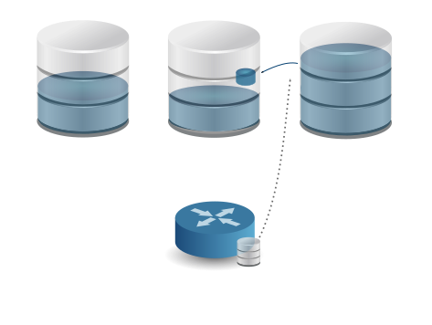
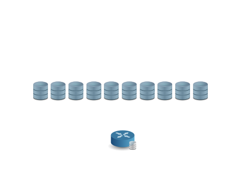
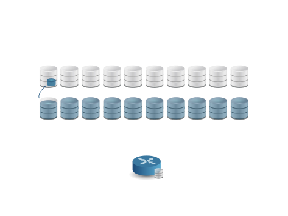

What is it, exactly?
by Ori Rothschild
v2
The questions we shall tackle
- What is Docker?
- Why use it?
- How does it work?
- What is an Images?
- What is a container?
- What is isolation?
Docker is big
but in a nutshell Docker makes it really easy to isntall and run software without worrying about setups or dependencies

the single file with all the deps and config required to run a program is called an image
Image (running instances of an image is called a contianer)
Docker Client
tool that we are going to issue commands to
Docker Deamon
tool that is responsible for running images,containers,etc

Docker run Flow
At scale, ops become more interesting...
- How long does it take to copy 1-2 TB over the network?
- How long does it take to rebuild all indexes?
- While DBA doesn't need to do anything but wait, it's not fun to wait week(s)
- If there's network glitch during initial sync, start from scratch
- Note: Manual workarounds existed to make this faster, but sometimes they can't be used (mmapv1->wiredTiger sync)
Balancer recap
A MongoDB cluster:
- Consists of N shards (partitions)
- ...which consist of chunks (mini-partitions)
- ...each chunk contains ~ 64 MB of data (by default)
- The Balancer tries to keep an even number of chunks on each shard
- If you configured zones the balancer tries to move chunks to the zone they belong
2. Moving balancer to config server
- Used to run on a mongos
- Users have 100+ mongoses, but only 1 of them can run balancer
- Led to unnecessary stress competing for the balancer lock
- There's only 1 primary config server => No locking needed
3. Compression of Wire Protocol (SERVER-3018)
--networkMessageCompressors=snappy- Big deal over WAN
- Snappy compression usually 4-5x & light on CPU
- I have no test results, sorry :-(
4. Balancer throttling
Throttling & balancer
- Balancer is a background process
- Until MongoDB 3.2:
- Throttle to limit overhead to application queries. (Important with MMAPv1 engine.)
- Only 1 migration concurrently.
- w:2 write concern used for each document insert & delete.
- New in MongoDB 3.4:
- Runs on the primary config server
- No throttling for WiredTiger
- 1 migration per shard concurrently (max = shards/2)
- Hardwired w:majority at end of insert / delete of chunk
Configurability of the balancer
- Users need to configure both ways:
- Balancer is causing too much overhead: it should run less
- Need to quickly move data to other shards: it should run faster
- Solutions available:
Example
use config
db.settings.update(
{ "_id" : "balancer" },
{ $set : { "_secondaryThrottle" : false ,
"writeConcern": { "w": 1 } } },
{ upsert : true }
)
Let's benchmark this
YCSB load with 30 threads x 100 batchsize
3 shards * 3 replicas
MongoDB 3.2.4
AWS c3.large with standard EBS*
Throughput: 5k - 25k docs / sec **
*) Test is short enough that boosting provides good EBS perf.
**) This is a very low throughput, which is the point of this test.
This test demonstrates a common effect where sharded clusters become unbalanced
even with a simple insert workload when not using hashed shard key.
$ ./bin/ycsb load mongodb-async -s -P workloads/throttlingtest -threads 30 $ cat workloads/throttlingtest mongodb.url=mongodb://throttl-4.henrikingo3.8300.mongodbdns.com:27017/test mongodb.batchsize=100 recordcount=50000000 operationcount=1000 workload=com.yahoo.ycsb.workloads.CoreWorkload readallfields=true readproportion=0.5 updateproportion=0.5 scanproportion=0 insertproportion=0 requestdistribution=zipfian
What did we learn?
- A naive insert / load test is not distributed well over all shards
- With throttling on, balancer will not keep up = unbalanced cluster
- With throttling off, balancer will keep up
- Note: this is still an inefficient way of loading data into MongoDB
- Point is just that the balancer is able to keep up
- The default in MongoDB 3.4 is throttling off
5. Parallel chunk migrations
As with initial sync, adding a new shard to a cluster is easy. Just add an empty shard, and the balancer starts moving data to it.
At scale, ops become more interesting...
 MongoDB 3.2: Only 1 migration at a time.
All new shards but one remain empty.
The DBA just needs to wait... but how long?
MongoDB 3.4: N/2 migrations at a time.
Double nr of shards in same time as adding 1 shard.
Future work
SERVER-27760Smarter, stateful orphan deletion (3.6)SERVER-5931Secondary reads in a sharded cluster (3.6)- SERVER-20739 Make initial sync resilient to network/other failures
- SERVER-9287 Split chunks on mongod, not mongos
- Maybe make chunk migrations even faster?
- Bulk inserts
- More than one per shard